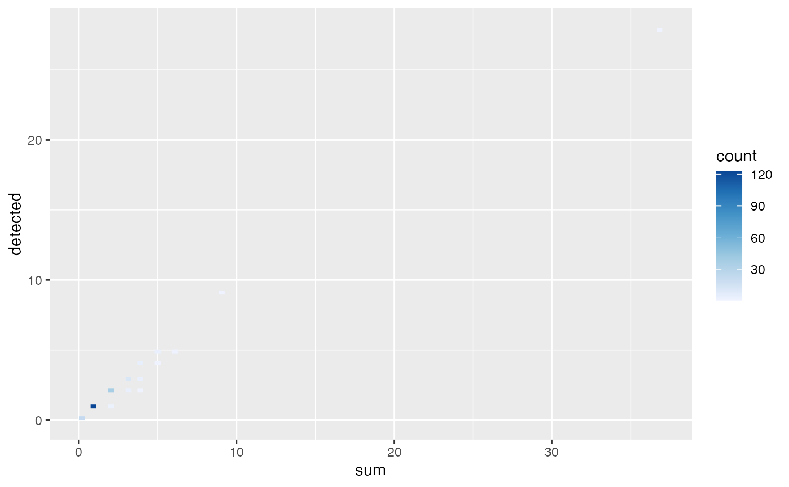
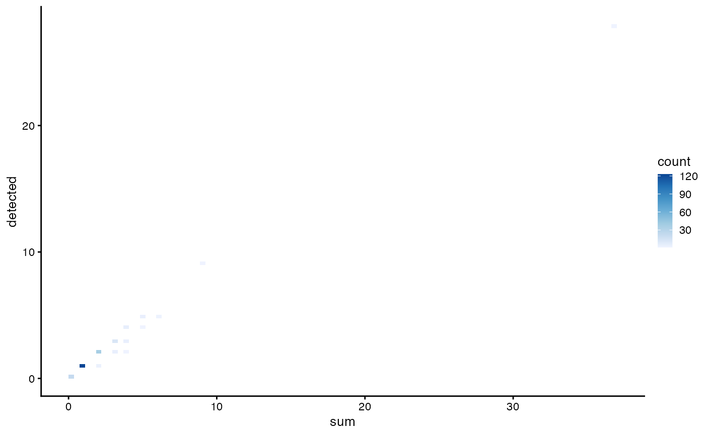

10X Multiome ATAC-seq basic quality control
Kayla Jackson and A. Sina Booeshaghi
2024-04-22
Source:vignettes/vig14_10xmultiome.Rmd
vig14_10xmultiome.RmdIntroduction
The data in this vignette is shipped with the cellatlas
repository. The count matrix and metadata are provided in the
cellatlas/examples folder as an AnnData
object. We will begin by loading the object and converting it to a
SingleCellExperiment object.
library(stringr)
library(DropletUtils)
library(Matrix)
library(SpatialExperiment)
library(SpatialFeatureExperiment)
library(scater)
library(scuttle)
library(Voyager)
library(ggplot2)
theme_set(theme_bw())
if (!file.exists("10xmultiome.rds"))
download.file("https://github.com/pachterlab/voyager/raw/documentation-devel/vignettes/10xmultiome.rds", destfile = "10xmultiome.rds")
sce <- readRDS("10xmultiome.rds")
sce <- addPerCellQCMetrics(sce)
names(colData(sce))
#> [1] "sum" "detected" "total"
plotColData(sce, "sum") +
plotColData(sce, "detected") 
plotColData(sce, x = "sum", y = "detected", bins = 100) +
scale_fill_distiller(palette = "Blues", direction = 1)
#> Scale for fill is already present.
#> Adding another scale for fill, which will replace the existing scale.
sce <- sce[, which(sce$total > 0)]
sce <- sce[rowSums(counts(sce)) > 0,]
sce
#> class: SingleCellExperiment
#> dim: 277 198
#> metadata(0):
#> assays(1): counts
#> rownames(277): 1:39574808-39575296 1:43131572-43131673 ...
#> X:152281428-152281521 X:166010316-166010375
#> rowData names(0):
#> colnames(198): AAACGGTTCATTAGCT AAACGGTTCCGAAACG ... TTTCAAGGTACTAACC
#> TTTCCGGCATTAGCAG
#> colData names(3): sum detected total
#> reducedDimNames(0):
#> mainExpName: NULL
#> altExpNames(0):
sessionInfo()
#> R version 4.3.3 (2024-02-29)
#> Platform: x86_64-apple-darwin20 (64-bit)
#> Running under: macOS Ventura 13.6.6
#>
#> Matrix products: default
#> BLAS: /Library/Frameworks/R.framework/Versions/4.3-x86_64/Resources/lib/libRblas.0.dylib
#> LAPACK: /Library/Frameworks/R.framework/Versions/4.3-x86_64/Resources/lib/libRlapack.dylib; LAPACK version 3.11.0
#>
#> locale:
#> [1] en_US.UTF-8/en_US.UTF-8/en_US.UTF-8/C/en_US.UTF-8/en_US.UTF-8
#>
#> time zone: UTC
#> tzcode source: internal
#>
#> attached base packages:
#> [1] stats4 stats graphics grDevices utils datasets methods
#> [8] base
#>
#> other attached packages:
#> [1] Voyager_1.4.0 scater_1.30.1
#> [3] ggplot2_3.5.0 scuttle_1.12.0
#> [5] SpatialFeatureExperiment_1.3.0 SpatialExperiment_1.12.0
#> [7] Matrix_1.6-5 DropletUtils_1.22.0
#> [9] SingleCellExperiment_1.24.0 SummarizedExperiment_1.32.0
#> [11] Biobase_2.62.0 GenomicRanges_1.54.1
#> [13] GenomeInfoDb_1.38.8 IRanges_2.36.0
#> [15] S4Vectors_0.40.2 BiocGenerics_0.48.1
#> [17] MatrixGenerics_1.14.0 matrixStats_1.3.0
#> [19] stringr_1.5.1
#>
#> loaded via a namespace (and not attached):
#> [1] RColorBrewer_1.1-3 jsonlite_1.8.8
#> [3] wk_0.9.1 magrittr_2.0.3
#> [5] ggbeeswarm_0.7.2 magick_2.8.3
#> [7] farver_2.1.1 rmarkdown_2.26
#> [9] fs_1.6.3 zlibbioc_1.48.2
#> [11] ragg_1.3.0 vctrs_0.6.5
#> [13] spdep_1.3-3 memoise_2.0.1
#> [15] DelayedMatrixStats_1.24.0 RCurl_1.98-1.14
#> [17] terra_1.7-71 htmltools_0.5.8.1
#> [19] S4Arrays_1.2.1 BiocNeighbors_1.20.2
#> [21] Rhdf5lib_1.24.2 s2_1.1.6
#> [23] SparseArray_1.2.4 rhdf5_2.46.1
#> [25] sass_0.4.9 spData_2.3.0
#> [27] KernSmooth_2.23-22 bslib_0.7.0
#> [29] htmlwidgets_1.6.4 desc_1.4.3
#> [31] cachem_1.0.8 igraph_2.0.3
#> [33] lifecycle_1.0.4 pkgconfig_2.0.3
#> [35] rsvd_1.0.5 R6_2.5.1
#> [37] fastmap_1.1.1 GenomeInfoDbData_1.2.11
#> [39] digest_0.6.35 colorspace_2.1-0
#> [41] ggnewscale_0.4.10 patchwork_1.2.0
#> [43] dqrng_0.3.2 RSpectra_0.16-1
#> [45] irlba_2.3.5.1 textshaping_0.3.7
#> [47] beachmat_2.18.1 labeling_0.4.3
#> [49] fansi_1.0.6 abind_1.4-5
#> [51] compiler_4.3.3 proxy_0.4-27
#> [53] withr_3.0.0 BiocParallel_1.36.0
#> [55] viridis_0.6.5 DBI_1.2.2
#> [57] highr_0.10 HDF5Array_1.30.1
#> [59] R.utils_2.12.3 DelayedArray_0.28.0
#> [61] rjson_0.2.21 classInt_0.4-10
#> [63] bluster_1.12.0 tools_4.3.3
#> [65] units_0.8-5 vipor_0.4.7
#> [67] beeswarm_0.4.0 R.oo_1.26.0
#> [69] glue_1.7.0 rhdf5filters_1.14.1
#> [71] grid_4.3.3 sf_1.0-16
#> [73] cluster_2.1.6 generics_0.1.3
#> [75] gtable_0.3.4 R.methodsS3_1.8.2
#> [77] class_7.3-22 BiocSingular_1.18.0
#> [79] ScaledMatrix_1.10.0 sp_2.1-3
#> [81] utf8_1.2.4 XVector_0.42.0
#> [83] ggrepel_0.9.5 pillar_1.9.0
#> [85] limma_3.58.1 dplyr_1.1.4
#> [87] lattice_0.22-6 deldir_2.0-4
#> [89] tidyselect_1.2.1 locfit_1.5-9.9
#> [91] knitr_1.45 gridExtra_2.3
#> [93] edgeR_4.0.16 xfun_0.43
#> [95] statmod_1.5.0 stringi_1.8.3
#> [97] yaml_2.3.8 boot_1.3-30
#> [99] evaluate_0.23 codetools_0.2-20
#> [101] tibble_3.2.1 cli_3.6.2
#> [103] systemfonts_1.0.6 munsell_0.5.1
#> [105] jquerylib_0.1.4 Rcpp_1.0.12
#> [107] parallel_4.3.3 pkgdown_2.0.9
#> [109] sparseMatrixStats_1.14.0 bitops_1.0-7
#> [111] viridisLite_0.4.2 scales_1.3.0
#> [113] e1071_1.7-14 purrr_1.0.2
#> [115] crayon_1.5.2 scico_1.5.0
#> [117] rlang_1.1.3 cowplot_1.1.3